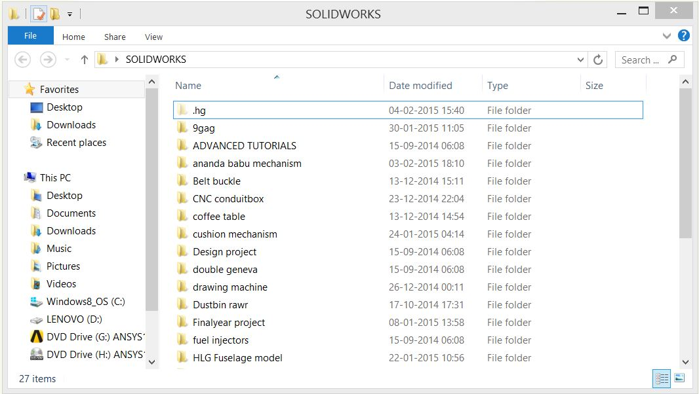

I'm very new to website design, the only thing I remember from my school days is the 'marquee' tag, which I've so proudly used.
(the 'lol' moves weirdly because its a down moving marquee nested in right moving marquee nested in an up moving marquee.. Its interesting to see how it phases in and out)
the rest I've learnt slowly and tediously under the patient tutelage of our fablab instructor Henry.
At first my text was really wide but with a little basic CSS I managed to make it look a little neat, what I've done is created margins to the right . sure, my space is wasted but at least the page doesn't make me feel tired and irritated like this one
I've found the <p> tag really useful when it comes to ogranising things
one
below
the
other
Though you can also use <br>
the Break tag doesn't put a space between the two lines though.
Another feature that I was really excited to use was the fixed sidbar, I tried using the Float tag to make it work but I could never quite get it, so I cheated a little and created a div "sidebar" , fixed its position at 10px ,100px, and then put a 600px left margin on the body.
(if its stupid and it works, it ain't stupid)
I wanted to have a background image for my index page but it was too dark. I looked everywhere trying to make it transparent but I gave up and used Illustrator in the end
for anyone starting out with HTML, I highly recommend Sublime Text Editor . It give you prompts for the tags so you dont have to remember or reference every tag. also check out w3school's HTML Tutorial. Its very newbie friendly.
What IS this software?!?! Why is it so complicated!?! Why do i have to do this!?!?
Are some of the things you might ask yourself while trying (and failing) to learn how to use mercurial 5 minutes before class. but the HGinit tutorial is pretty cool and provides comic relief from time to time
So I made a repository in my Solidworks folder

and tried out a few basic commands

turns out its a bad idea to use 'hg diff' if you're working with solidworks files. this went on for about 2 minutes while it listed every textual change I had made to the files

I then tried adding all the new files to the system and managed to do that without bringing about the apocalypse. which is good

The basic gist of mercurial (that I've understood) is maintaining version control so that you never have to look at a file you saved that didnt work and cry about it while you revert every change manually.
How it works is that theres a central repository that holds all our information, and I mean EVERYONE's. mine, yours, javiers, jackie chan's(... you get the idea) and we have to download this entire repository on to our computers (which is why its imperitive that you NEVER PUSH WITHOUT PULLING because then you're pushing your version of the repository (which doesnt have any of the updates that everyone else has made) onto the central repository, effectively negating everyone elses work. If you're THAT kind of student then shame on you, Nitin.
I think it would be interesting to create an automated catapault or slingshot, one that would take input in the form of how long and how high the projectile needs to go, and would then accordingly set the angle and tension on the spring/sling. The projectile would have to be standard, maybe a marble (a circular object is always preferrable due to the simpicity of its viscous nature)
The launching mechanism could be in the form of a wooden channel with a sliding piston powered by a spring and drawn back by a stepper motor, the tension could be measured using a strain guage or simply by noting the revolutions of the stepper, but the spring would have to be operated strictly in its linear elasticity range
The angle and speed can be set using the equations of projectile motion, as the mass of the projectile would be standard